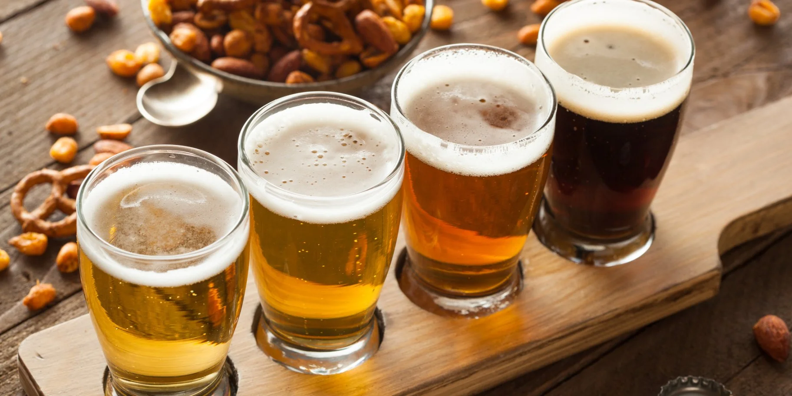

Все про пиво
Пиво — один із найстаріших алкогольних напоїв у світі. Його історія налічує тисячі років, і за цей час людство створило безліч різноманітних стилів і смакових варіацій.
Основні види пива — світле, темне, червоне, пшеничне та лагер. Кожен стиль має свій характер, аромат і смакові особливості. Наприклад, світле пиво зазвичай легке та освіжаюче, а темне — насичене та з карамельними нотами.
Пиво виготовляють із води, солоду, хмелю та дріжджів. Існують також спеціальні сорти з додаванням фруктів, спецій або меду, які роблять смак ще більш цікавим.
Цей напій завжди був частиною культури та соціального життя: від стародавніх святкувань до сучасних фестивалів. Пиво поєднує людей і відкриває нові смаки для справжніх поціновувачів.